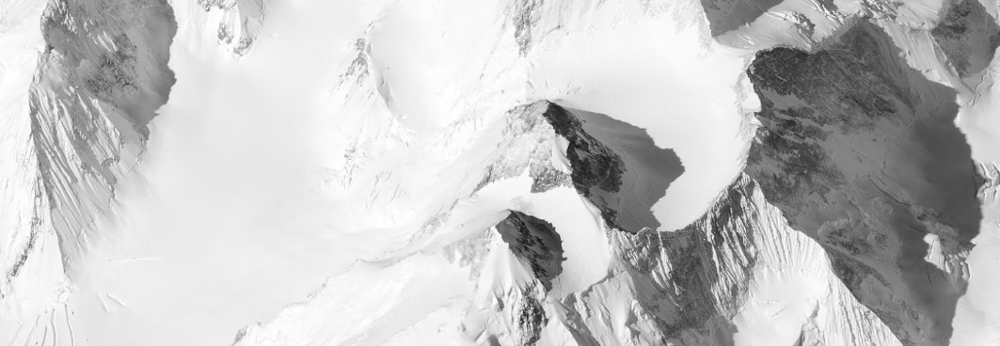

On July 27, 2017 there were 20 people attending the Data Visualization meetup.
Out of those 20 there were 12 people who attended.
5 out of 12 people had iphones. The other 7 had android devices
Out of those 12 attendees only 3 people were San Diego natives.
The age group for the attendees ranged between 25 and 65.